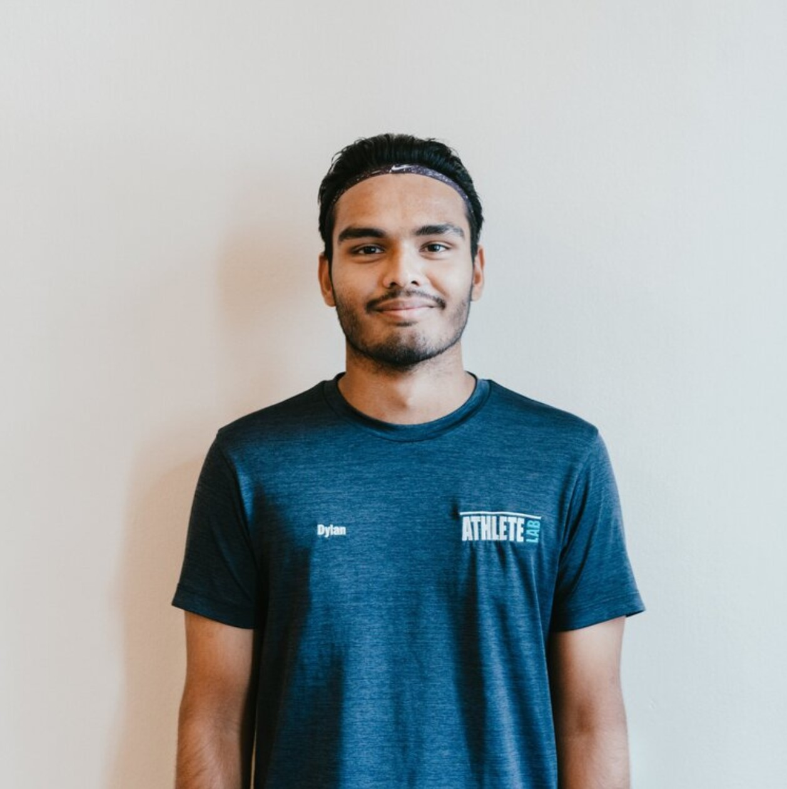
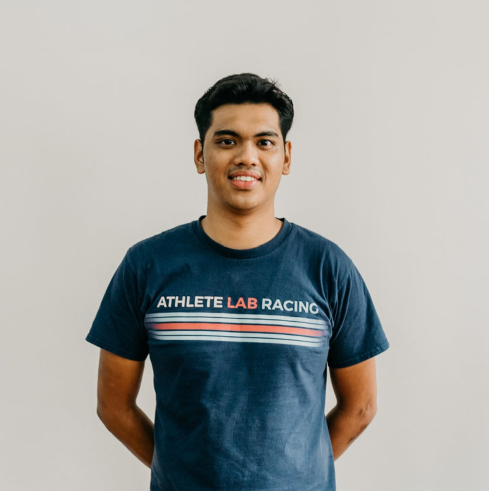
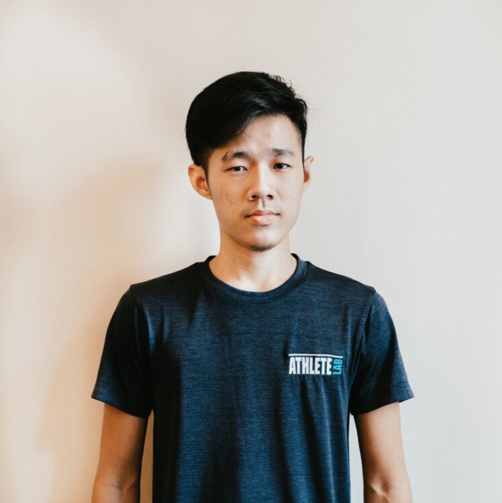
Monica started practicing yoga in 2014 while recovering from an injury as a contemporary
dancer in London. Her transformational process was so great, specially emotionally, being able to accept my new condition that at the time she felt it was her
calling to become a Yoga teacher and be able to help others. She has had the pleasure to work alongside beautiful souls in the UK, Portugal and currently in Singapore.
She is extremely passionate about the spiritual, physical but mainly emotional benefits of practicing Yoga. She is interested in the bridge between mind, body and soul, inner and ultimately outer well being.
She aims to help her students clear their minds, cleanse their bodies and open their hearts through asana and pranayama balanced with a strong meditation practice with the hope that somewhere within the chaotic urban life, they will find stillness and silence, allowing opportunity to deepen, reflect and absorb the effects of practicing Yoga.">
She is extremely passionate about the spiritual, physical but mainly emotional benefits of practicing Yoga. She is interested in the bridge between mind, body and soul, inner and ultimately outer well being.
She aims to help her students clear their minds, cleanse their bodies and open their hearts through asana and pranayama balanced with a strong meditation practice with the hope that somewhere within the chaotic urban life, they will find stillness and silence, allowing opportunity to deepen, reflect and absorb the effects of practicing Yoga.">
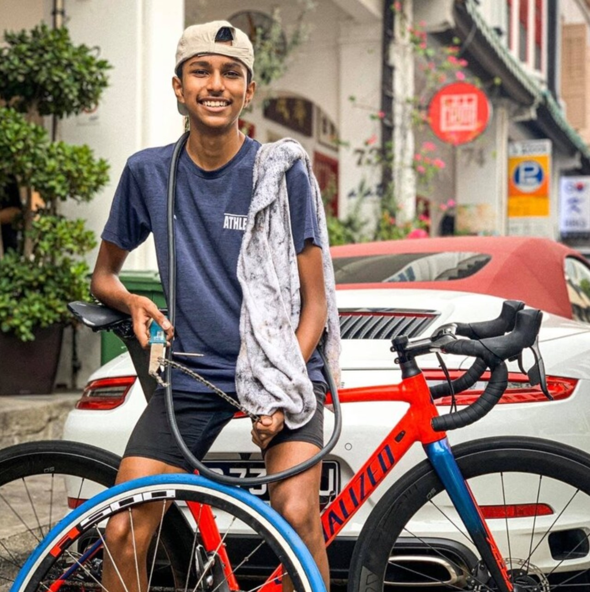
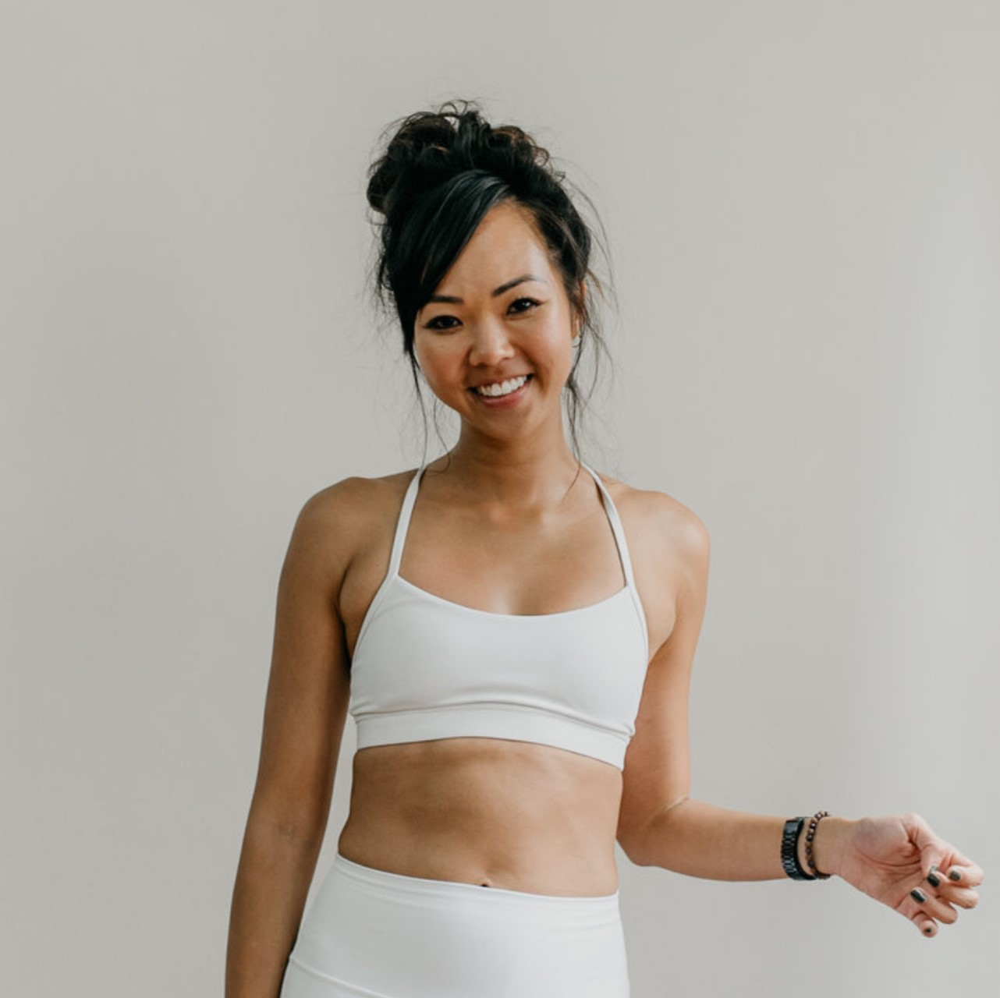
As someone who constantly moves from one place to the next,
living life spontaneously, yoga has a special way of keeping Sheranne grounded. She first discovered yoga in 2010 whilst she was living in LA as a form
of therapy and rehabilitative exercise after she had an invasive decompression surgery in her lower back.
In her previous life as a headhunter in Hong Kong, her practice started to deepen due to the hectic and stressful nature of the industry, and she was able to benefit from the mental and spiritual aspects of yoga. She decided to commit to the path of yoga and attained her 200 hour YTT in India, and has since continued with various trainings and workshops.
What Sheranne loves about teaching is seeing people from all walks of life come together to practice, with a common goal of wanting to make a change in their lives. "> 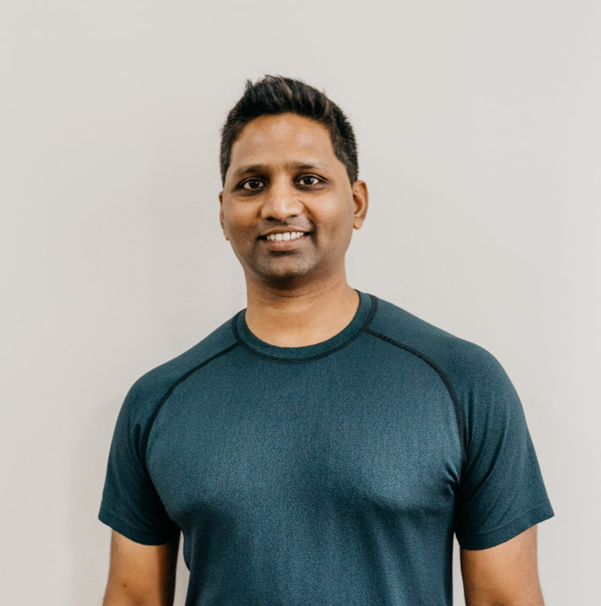 Krishna is a Singapore based Resident yogi. He has more than a decade of experience teaching yoga and wellness. He is a certified Iyengar Yoga Teacher, which is alongside other wellness certifications he has completed over the last few years. He believes that one needs to be physically and mentally fit to live a balanced life and to achieve anything he wants.
He grew up with yoga being a part of his daily routine back when he was a student in Hyderabad, India. Continuously working under the guidance of his spiritual master, he aims to take students on a holistic yoga and wellness journey.
Throughout the years, yoga has allowed him to see the connection of the mind and body, and it is this understanding that has spurred him to embark on this journey which eventually became a lifelong passion.">![Yoshie - Yoga
<br>
Yoshie discovered yoga in 2004 when she was working as a flight stewardess in Singapore. She was struggling to find the balance in her tight irregular working schedule after flying for about five years. Yoga helped her to ground her literally, and to be more mindful with her diet and overall lifestyle.
<br>
She completed her first 250 hours YTT in 2007 at the Iyengar style studio when she moved to Hong Kong. She continued her practice with Patrick Creelman in Anusara method. She's been practicing with Arun Rana and Heeboon Tan since returning to Singapore in 2014.
<br>
Her teaching is focused on the alignment as she believes the safe and long term practice is based on the fundamental alignment.](Yoshie.jpg)
In her previous life as a headhunter in Hong Kong, her practice started to deepen due to the hectic and stressful nature of the industry, and she was able to benefit from the mental and spiritual aspects of yoga. She decided to commit to the path of yoga and attained her 200 hour YTT in India, and has since continued with various trainings and workshops.
What Sheranne loves about teaching is seeing people from all walks of life come together to practice, with a common goal of wanting to make a change in their lives. "> 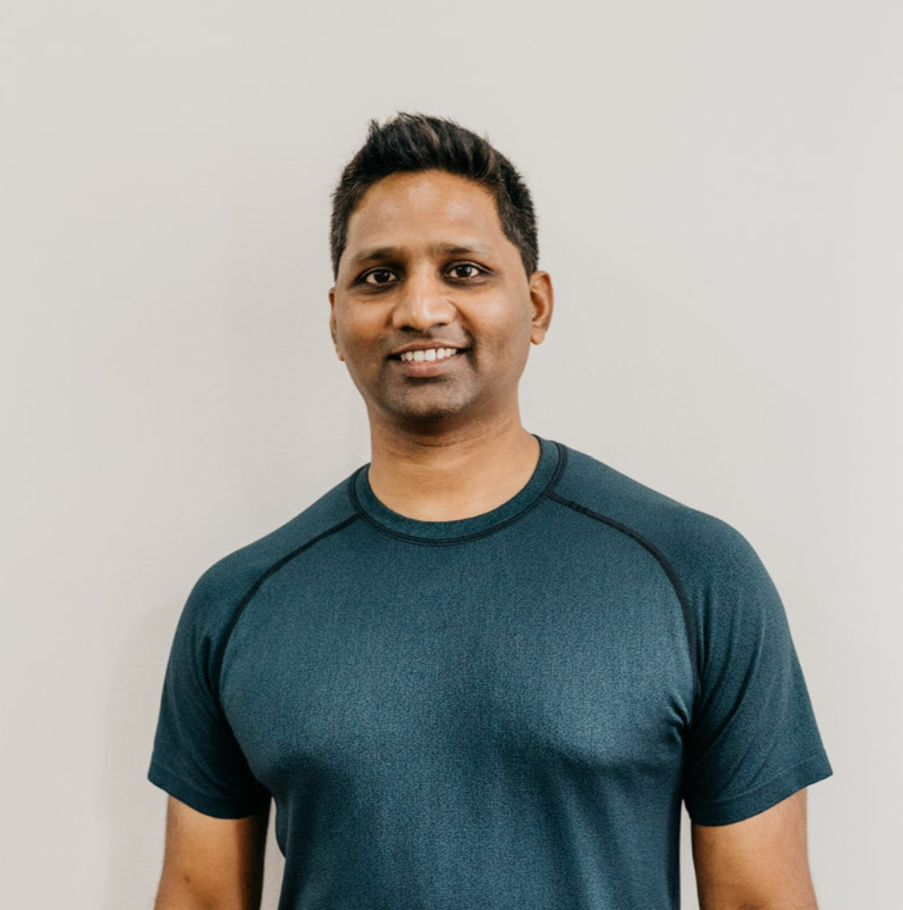 Krishna is a Singapore based Resident yogi. He has more than a decade of experience teaching yoga and wellness. He is a certified Iyengar Yoga Teacher, which is alongside other wellness certifications he has completed over the last few years. He believes that one needs to be physically and mentally fit to live a balanced life and to achieve anything he wants.
He grew up with yoga being a part of his daily routine back when he was a student in Hyderabad, India. Continuously working under the guidance of his spiritual master, he aims to take students on a holistic yoga and wellness journey.
Throughout the years, yoga has allowed him to see the connection of the mind and body, and it is this understanding that has spurred him to embark on this journey which eventually became a lifelong passion.">
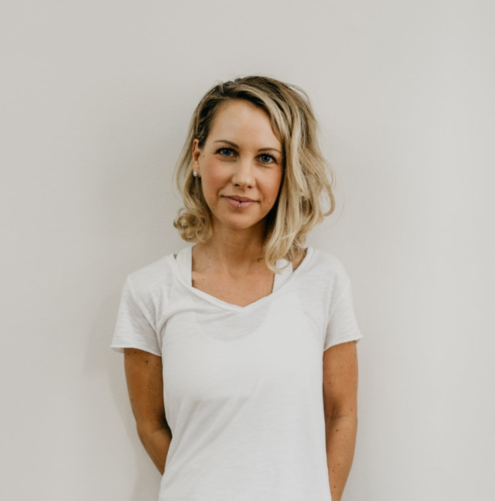
Miriam hails from Munich where she was a graphic designer for many years with different advertising companies.
In 2007, her partner received an interesting job offer in China and that took them to Shanghai for 3 years, where her yoga journey began.
She quickly fell in love with Vinyasa, Hatha and Yin Yoga and these styles have accompanied her on her journey. The urban jungle and long working hours in Shanghai took a lot of vital energy out of her and she started to seek sanctuary in yoga and meditation. She soon realised that harmony of the mind, body and soul were what was most important to her and drove her to become a teacher.
Her love for travelling brought her to Singapore in November 2015 where she is teaching since then. Miriam loves teaching Vinyasa and Hatha classes as much as the slower-paced Yin, Yoga Therapy and Restorative classes. She views them as perfect complements in a practice."> 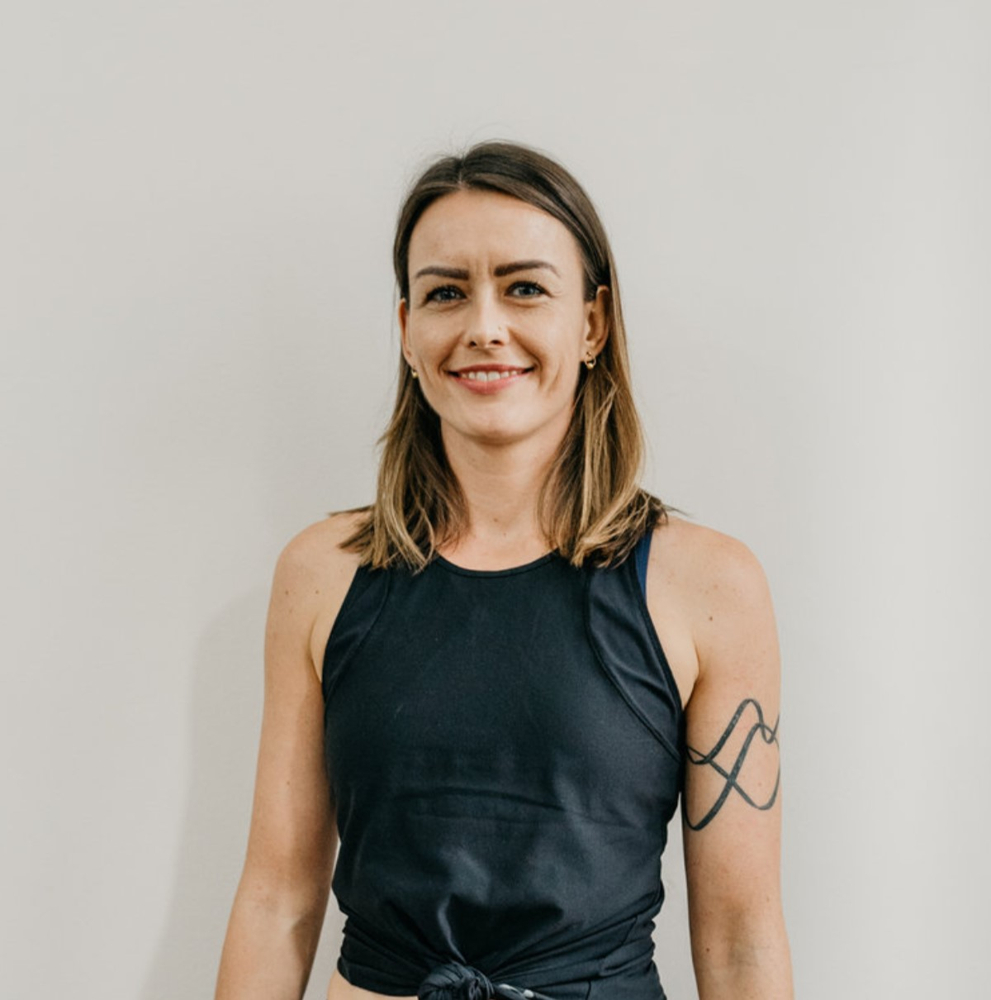 Marta Magdalena is a dedicated yoga practitioner and instructor with over 15 years of experience as a student and almost a decade as a teacher.
Influenced by the world-famous leaders and teachers, among others, Thich Nhat Hanh, BKS Iyengar, S.N Goenka, Sharath R. Jois, Marta has been inspiring and motivating her students to change their attitude towards life through the disciplined daily practice.
Through her own history of severe back pain as a teenager and knee injury as an adult, Marta developed a sense of understanding of the human body and compassion towards the students with limited physical abilities.
Experienced in working with clients from various sports background, and often with a history of injuries themselves, Marta tries to incorporate her knowledge of anatomy and human body to share with the students the practice suitable for their needs."> 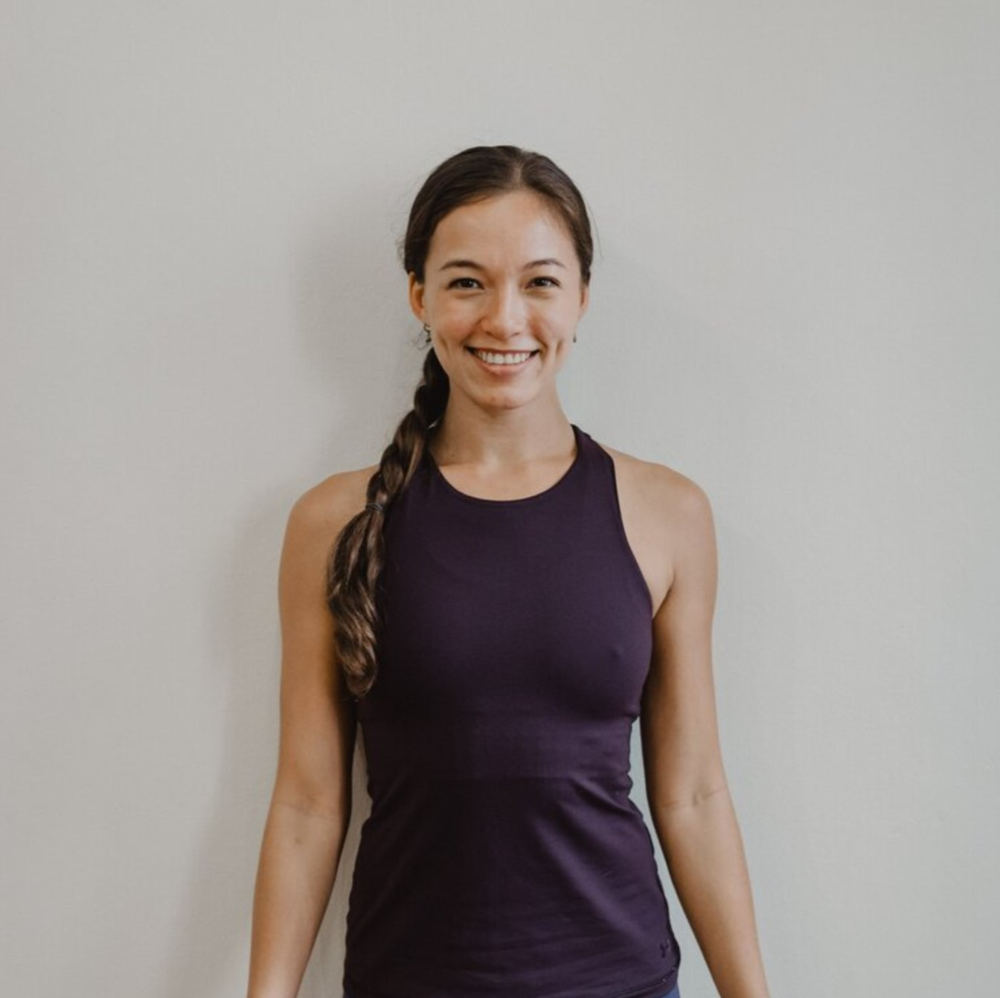 Stephanie approaches life treading between yin and yang ways of living.
Primarily as an athlete and strength trainer, she found yoga in 2013 and discovered that yoga not only supplemented her fitness regime, but complimented all other areas of her life.
She obtained her 200hr YTT in 2015 studying elemental yoga therapy, where she quickly found that the yin and restorative styles of yoga is what she wanted to focus on as a teacher.
She received two 65 hour yin yoga teacher trainings - first at Sampoorna Yoga School in 2018, and is continuing her trainings with Jo Phee (Master teacher of yin yoga) in the pursuit of a yin yoga diploma.
Stephanie hopes to share with her students the benefits of what it means to settle in stillness, and how to practice physical postures as a support to mental and emotional wellbeing.">
She quickly fell in love with Vinyasa, Hatha and Yin Yoga and these styles have accompanied her on her journey. The urban jungle and long working hours in Shanghai took a lot of vital energy out of her and she started to seek sanctuary in yoga and meditation. She soon realised that harmony of the mind, body and soul were what was most important to her and drove her to become a teacher.
Her love for travelling brought her to Singapore in November 2015 where she is teaching since then. Miriam loves teaching Vinyasa and Hatha classes as much as the slower-paced Yin, Yoga Therapy and Restorative classes. She views them as perfect complements in a practice."> 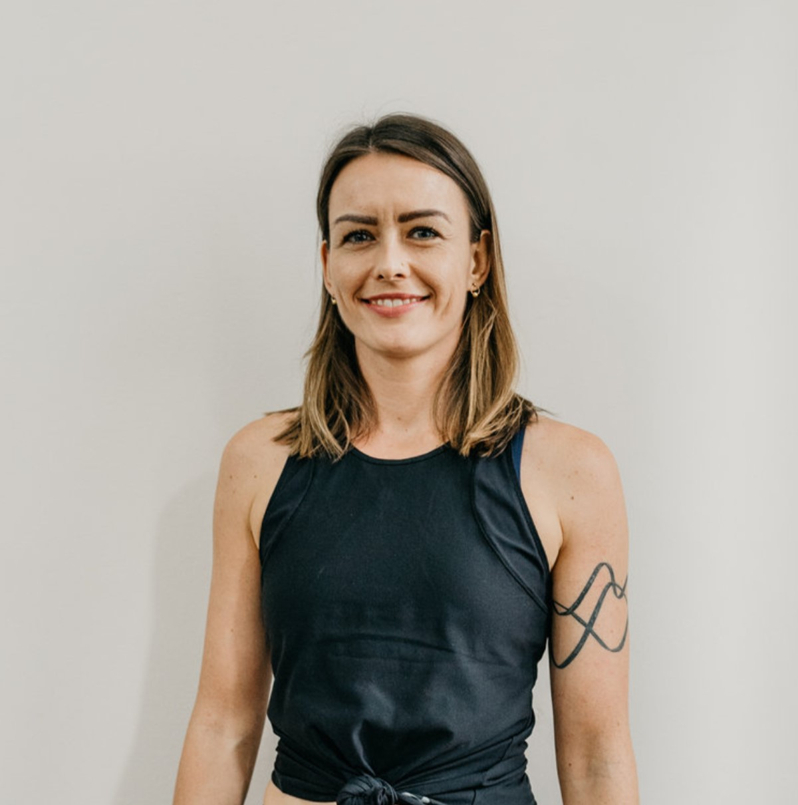 Marta Magdalena is a dedicated yoga practitioner and instructor with over 15 years of experience as a student and almost a decade as a teacher.
Influenced by the world-famous leaders and teachers, among others, Thich Nhat Hanh, BKS Iyengar, S.N Goenka, Sharath R. Jois, Marta has been inspiring and motivating her students to change their attitude towards life through the disciplined daily practice.
Through her own history of severe back pain as a teenager and knee injury as an adult, Marta developed a sense of understanding of the human body and compassion towards the students with limited physical abilities.
Experienced in working with clients from various sports background, and often with a history of injuries themselves, Marta tries to incorporate her knowledge of anatomy and human body to share with the students the practice suitable for their needs."> 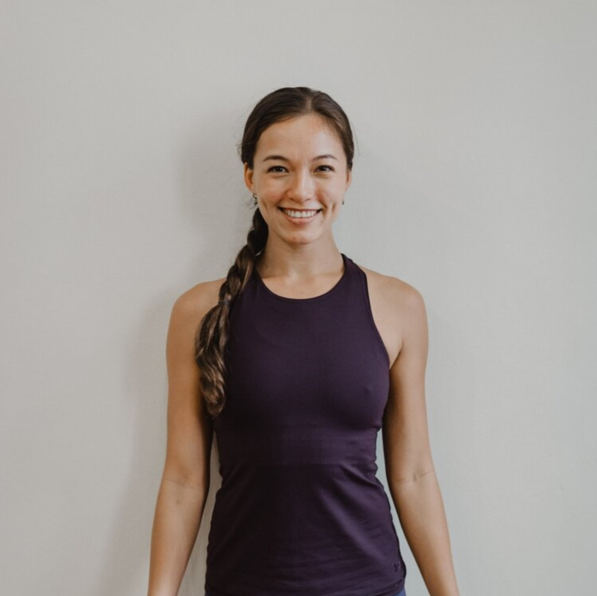 Stephanie approaches life treading between yin and yang ways of living.
Primarily as an athlete and strength trainer, she found yoga in 2013 and discovered that yoga not only supplemented her fitness regime, but complimented all other areas of her life.
She obtained her 200hr YTT in 2015 studying elemental yoga therapy, where she quickly found that the yin and restorative styles of yoga is what she wanted to focus on as a teacher.
She received two 65 hour yin yoga teacher trainings - first at Sampoorna Yoga School in 2018, and is continuing her trainings with Jo Phee (Master teacher of yin yoga) in the pursuit of a yin yoga diploma.
Stephanie hopes to share with her students the benefits of what it means to settle in stillness, and how to practice physical postures as a support to mental and emotional wellbeing.">